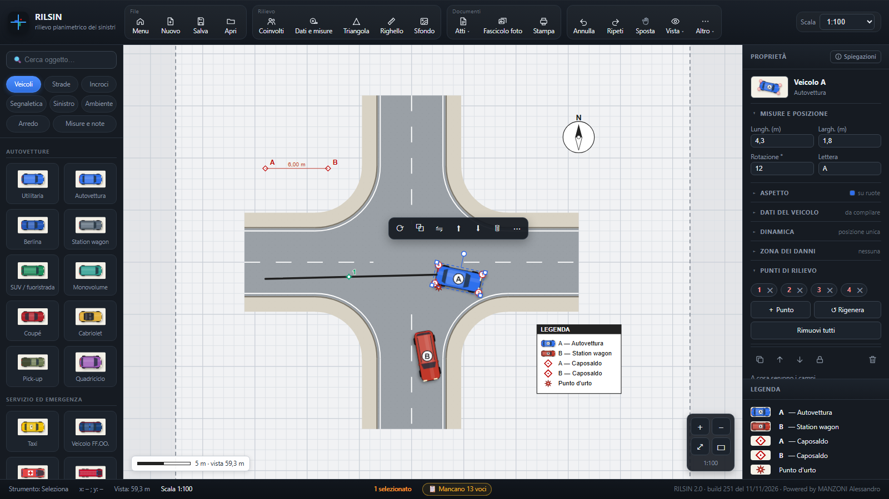

Il rilievo del sinistro stradale, dal posto all'atto firmato.
RILSIN è un'app gratuita per chi rileva i sinistri: schizzo della scena, misure guidate, foto, dati dei coinvolti e atti pronti da stampare, con la planimetria in scala. Sul telefono, sul tablet e sul PC, anche senza rete.

Che cosa fa
Segue il lavoro nell'ordine in cui si fa sul posto, e alla fine prepara i documenti.
Schizzo che capisce la scena
Si disegna col dito: le linee diventano strade, i rettangoli veicoli con la loro lettera, un cerchio una rotatoria. Frenate, urto e strisce si riconoscono da soli.
Misure guidate
Dal caposaldo, un punto alla volta, con la piantina del veicolo e il punto da misurare. Triangolazione, coordinate e controllo delle misure che non tornano.
Dati dei coinvolti dalla foto
Patente, carta di circolazione, carta d'identità e assicurazione si leggono dalla foto, senza internet. Codice fiscale, scadenze e revisione vengono controllati.
Foto guidate
Una foto alla volta, dal generale al particolare, costruite sulla scena disegnata. Didascalie pronte e fascicolo fotografico impaginato.
Atti pronti
Verbale di rilievi, planimetria in scala con legenda e cartiglio, fascicolo completo in PDF o Word. Timbro e loghi del proprio Comando.
Scambio dati tra le parti
Una copia per ogni conducente, con la firma per ricevuta presa col dito sullo schermo, oppure inviata per e-mail.
Ricostruzione
Velocità dalla frenata, spazio di arresto, urto e velocità in curva, con i calcoli da allegare all'atto. Condizioni di luce calcolate dalla posizione del sole.
Foto aerea di sfondo
Ortofoto del Geoportale già in scala, oppure la vista satellite da calibrare; si ritaglia e ci si disegna sopra.
Anche senza rete
Funziona nei luoghi senza copertura. Tavole e foto restano nel dispositivo; con la copia di sicurezza si conservano tutte in un solo file.
Installa RILSIN
Stessa app, stesse tavole: una tavola fatta sul telefono si apre sul PC.
🤖 Android
- Scarica il file RILSIN.apk.
- Aprilo: Android chiede di consentire l'installazione da questa fonte, perché l'app non viene dal Play Store.
- Per aggiornare installa il nuovo file sopra il vecchio: le tavole restano.
Sempre l'ultima versione. Si trova anche nel canale Telegram di RILSIN.
🍏 iPhone e iPad
- Apri questo indirizzo in Safari e tocca «Apri l'app».
- Tocca Condividi (il quadrato con la freccia) e poi Aggiungi alla schermata Home.
- Da allora aprila dall'icona RILSIN: funziona anche senza rete e gli aggiornamenti arrivano da soli.
💻 PC
- Apri l'app in Edge o Chrome: le tavole si salvano come file, dove vuoi (anche nella cartella condivisa dell'ufficio).
- Per l'ufficio senza internet c'è anche la versione in una cartella da copiare: è descritta nella guida.
Novità
RILSIN cresce con le segnalazioni di chi lo usa: ogni aggiornamento ha il suo numero di build.
Le novità dell'ultima versione sono in Informazioni, dentro l'app.
ⓘ Strumento di ausilio
RILSIN è realizzato da un operatore e non è un applicativo distribuito dall'Arma dei Carabinieri né da altre amministrazioni. Misure, calcoli ed elaborati vanno sempre verificati da chi li firma e non sostituiscono il rilievo e la valutazione tecnica.
🔒 I tuoi dati
Tavole, foto e dati dei coinvolti restano solo nel tuo dispositivo: nessuno li riceve, nemmeno questo sito. Niente account, niente statistiche, niente cookie.
Problemi, idee, domande
Scrivi a rilsin.app@gmail.com, oppure dall'app con «Segnala un problema», che aggiunge da solo versione e dispositivo. RILSIN è gratuito e lo resterà: se ti è utile, il modo migliore per sostenerlo è farlo conoscere ai colleghi. Se vuoi, puoi anche offrire un caffè all'autore.